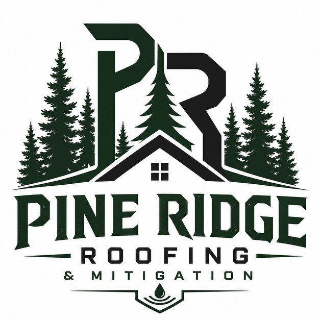
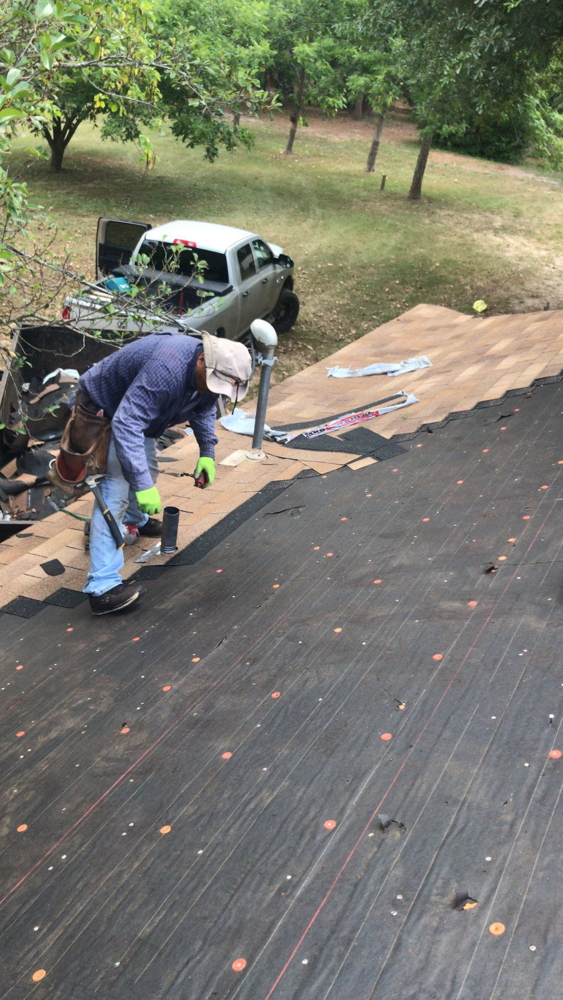
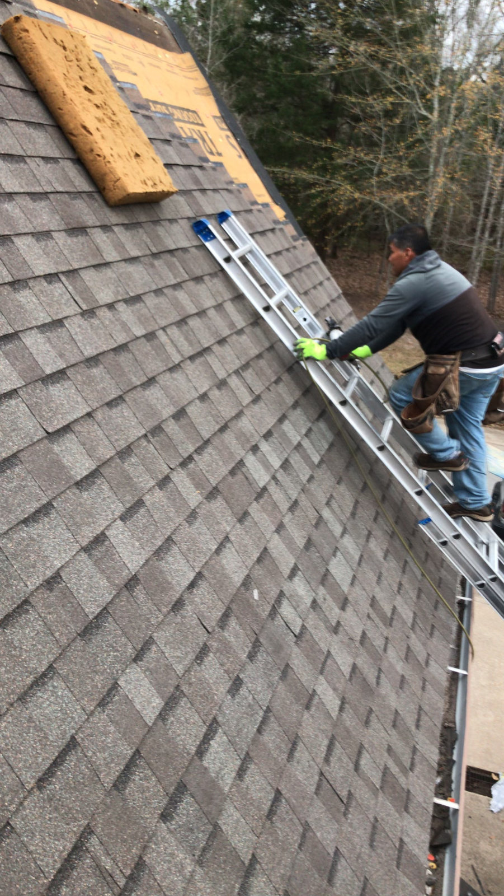
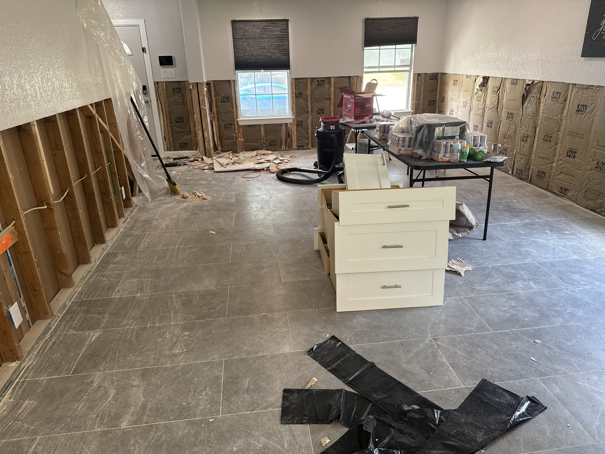
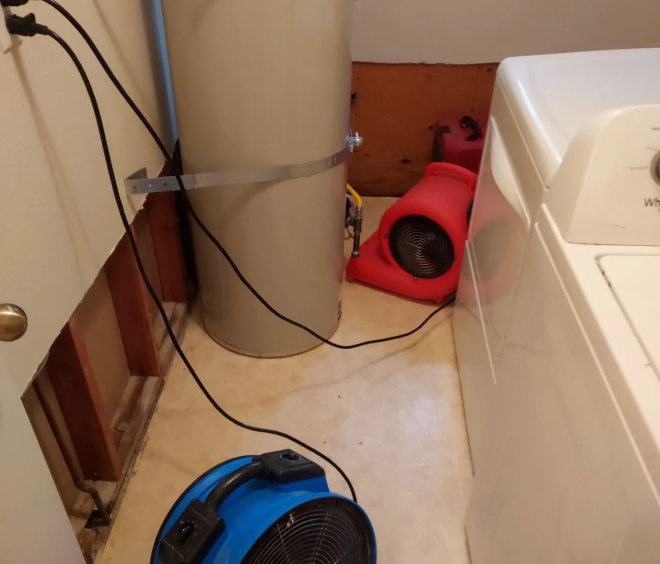
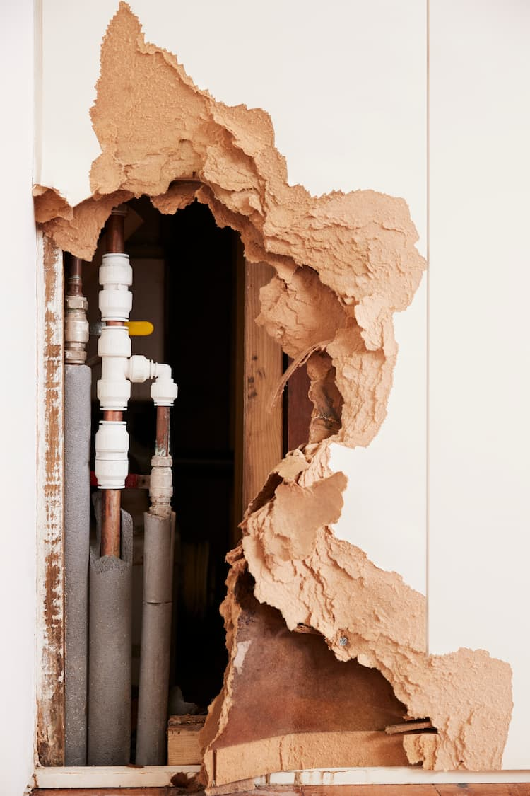
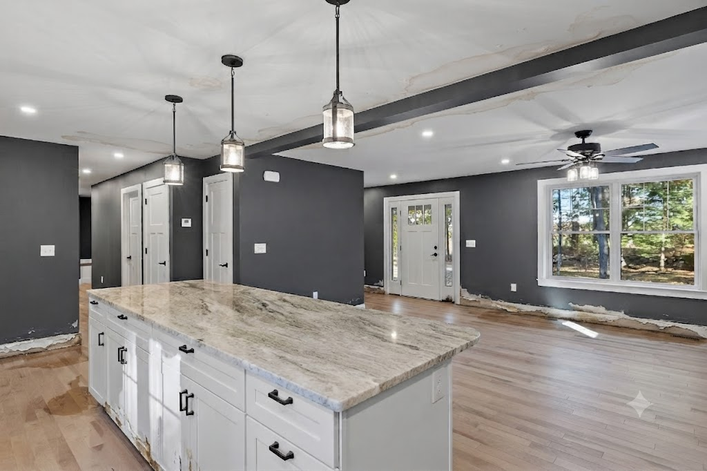
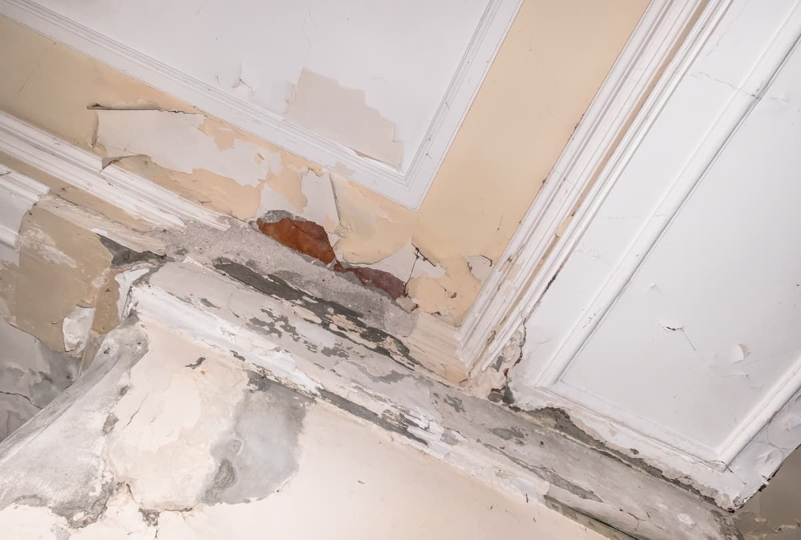

Residential Roofing
Full roof replacement, repairs, and storm damage work, plus gutters, siding, and skylights. Pitched shingle roofs built for Texas weather and finished clean.
Residential Roofing →Pine Ridge Roofing and Mitigation is a locally owned roofing and water damage restoration company serving Cherokee County, Smith County, and the surrounding East Texas area. Residential and commercial work, and free estimates every time.

East Texas homeowners have seen enough out-of-town roofers roll in after a hailstorm and roll out before the work settles. Pine Ridge is not that. We live and work here, and our name is on every roof we touch.
We handle roofing and water damage restoration for homes and businesses across the area. When water gets in, we take it from the first moisture reading all the way through fresh paint, so you are hiring one company instead of two.
Three focused services for East Texas homes and businesses. Pick the one that fits, or call and we will point you the right way.
Full roof replacement, repairs, and storm damage work, plus gutters, siding, and skylights. Pitched shingle roofs built for Texas weather and finished clean.
Residential Roofing →
Commercial roofing handled on a per-project basis. Metal is what we see most on East Texas buildings. Call, describe the building, and we will tell you straight.
Commercial Roofing →
Water intrusion handled end to end. We find the moisture, remove the damage, dry the structure, and put the room back together through paint.
Water Mitigation →
Most water damage companies dry the structure and leave. Then you are on your own to find a second contractor to hang new drywall, replace insulation, and repaint. That is a second bid, a second schedule, and a second company blaming the first when something is off.
Pine Ridge handles the whole cycle. We take moisture readings, remove the water damaged drywall and insulation, dry the structure, put new insulation and drywall back, and paint. You deal with one company from the wet mess to the finished wall.
See How Water Restoration WorksA look at the roofing work Pine Ridge does across Cherokee County, Smith County, and the surrounding area.



How a water damage job goes with Pine Ridge, from the first moisture reading through the final coat of paint.






Reach out by phone or send the form. Tell us what is going on with the roof or the water, and we set a time to come take a look.
We look at the job in person, then put the price and the scope in writing with photos, so you know exactly what you are getting.
We agree on a time that works for you and line up the crew and materials. No surprise line items after the fact.
We finish the work, walk it with you, and clean up the site. You see the result, not our mess.
Based in Jacksonville and working across Cherokee County, Smith County, and the surrounding towns. Do not see yours? Call anyway. We travel for the right job.
Whether it is a roof that needs work or water that got where it should not be, call or send the form and we will come take a look, at no cost.
(903) 363-4384